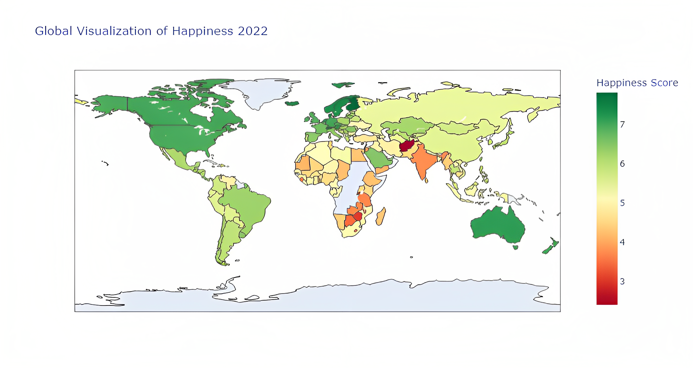

World Happiness Report Analysis
This project performs Exploratory Data Analysis (EDA) on the happiness rate of countries based on attributes such as happiness score, social support, GDP per capita, family, life expectancy, perceptions of corruption, etc. and analyzes the effect of COVID-19 on the individual attributes as well as the overall happiness of countries.

COVID-19 Data Exploration

This project analyzes a large COVID-19 dataset using SQL to identify each country's death and infection rates, the country with the highest infection rate and death count, the continent with the highest death count and much more.
Customer Analysis Visualization

This project visually analyzes a customer data using Tableau. The following key metrics are analyzed: Total revenue per state, Total revenue per category by gender
Total sales by category,
Percent revenue by region,
Total sales by age,
Total revenue by gender,
Total revenue per month and the Discount-Quantity correlation
This project performs data cleaning on a Housing Data using SQL to make the data easier to use.
This project cleans and analyzes a customer demographics dataset for bike sales in Microsoft Excel. The various analysis fields include customer age, income, commute distance, occupation, marital status, house owned, number of children, region of residence, occupation, education, and number of cars owned.
A dashboard is created for the analysis results with various filters using slicers for better visualization.
Data Visualization In Python
This project utilizes data visualization techniques to visualize a COVID-19 Dataset and prepare the data to answer the following questions using Python: How does the global spread of the virus look like? How intensive has the spread of the virus been in the countries? Does COVID-19 national lockdowns and self-isolations in different countries actually have an impact on COVID-19 transmission?
Amazon Product Reviews Sentiment Analysis
This project performs sentiment analysis on the reviews of an Amazon product and trains a Naive Bayes classifier to predict sentiment from thousands of product reviews with 94% accuracy.
{kind=link}